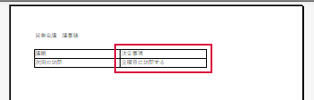

印刷すると表が切れる
右端の列だけが次の紙に送られるときに使います。
操作手順
- Ctrl＋P を押します。印刷設定と印刷プレビュー（紙に出る状態の見本）が開きます。
- 設定の下部にある拡大縮小の選択欄（例：拡大縮小なし）をクリックします。候補が開きます。
- ［すべての列を1ページに印刷］を選びます。表の横幅が用紙1枚に収まります。
- プレビュー下のページ送りで末尾まで確認します。

できたか確認
右端の列まで入り、文字を読める大きさですか。縦に長い表は複数枚でも構いません。
注意点
列自体がプレビューにない場合は印刷範囲が原因の可能性があります。設定を控え、ひな形の管理者に確認します。